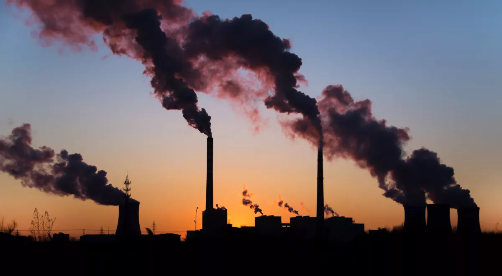
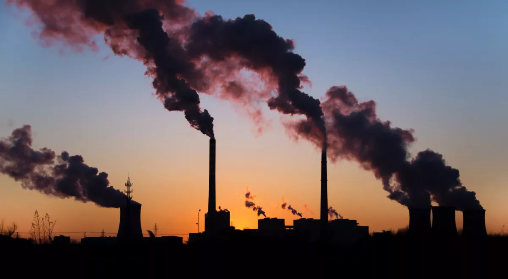

O que é conscientização ambiental?
A conscientização ambiental é o reconhecimento da importância de preservar os recursos naturais e reduzir os impactos negativos das atividades humanas no planeta. Ela envolve o desenvolvimento de uma mentalidade crítica e responsável em relação ao consumo, à produção de resíduos e ao uso dos recursos naturais. Por meio da educação ambiental, as pessoas passam a entender melhor a interdependência entre os seres vivos e o meio ambiente.
Por que é importante?
Esse tipo de conscientização é fundamental para enfrentar os desafios ambientais do presente e do futuro. Quanto maior o conhecimento da população sobre os problemas ambientais e suas causas, maior a chance de transformar comportamentos e adotar hábitos mais sustentáveis. Isso inclui escolhas no dia a dia, como evitar o desperdício, reciclar e apoiar práticas ecológicas em casa, na escola e no trabalho.
Fonte: https://fundacaocargill.org.br/conscientizacao-sobre-praticas-sustentaveis/

Impactos Ambientais

Desmatamento e Perda de Biodiversidade
Florestas estão sendo destruídas em ritmo acelerado, causando perda de biodiversidade e desequilíbrio nos ecossistemas.
Saiba mais
Poluição dos Oceanos
Toneladas de lixo são despejadas no mar todos os anos, afetando peixes, tartarugas e todo o ecossistema marinho.
Saiba mais
Mudanças Climáticas
O aumento das temperaturas globais gera eventos extremos como secas, enchentes e derretimento das calotas polares.
Saiba mais
Escassez de Água Potável
A água doce está cada vez mais rara em várias regiões, colocando em risco a saúde e o bem-estar de milhões de pessoas.
Saiba maisSoluções Sustentáveis
Ignorar os problemas ambientais não é mais uma opção. Se quisermos garantir um futuro melhor, precisamos mudar nossos hábitos e encontrar formas mais sustentáveis de viver. As soluções estão ao nosso alcance, só dependem de vontade e atitude.
No caso do desmatamento, a solução começa com a preservação e recuperação das florestas. Plantar árvores, criar áreas de proteção ambiental e apoiar práticas de agricultura sustentável são passos que fazem toda a diferença. Cada árvore em pé é uma chance a mais de manter o ar limpo, o solo fértil e a biodiversidade viva.
Quando falamos da poluição dos oceanos, a mudança começa nas nossas mãos. Reduzir o uso de plásticos descartáveis, separar o lixo corretamente e participar de ações de limpeza em praias e rios são atitudes simples, mas poderosas. E claro: cobrar das empresas e dos governos políticas que realmente protejam os mares.
Pra enfrentar as mudanças climáticas, o caminho é diminuir a emissão de gases poluentes. Como? Apostando em fontes de energia renovável, como solar e eólica, economizando energia no dia a dia e usando mais transporte público ou meios de locomoção sustentáveis, como bicicletas. Cada escolha mais consciente ajuda a frear o aquecimento global.
E quanto à escassez de água potável, o segredo é economizar cada gota. Fechar a torneira enquanto escova os dentes, consertar vazamentos e reutilizar a água sempre que possível são atitudes que precisam virar rotina. Além disso, preservar nascentes e evitar a contaminação dos rios é fundamental para garantir água limpa para todos.
O planeta já deu muitos sinais de alerta. Agora é a nossa vez de responder com ações concretas. Cada pequeno gesto pode somar a um grande resultado. Se queremos um futuro com qualidade de vida, a hora de mudar é agora.
Fontes: brasil.un.org, brasil.oceana.org, climainfo.org.br, ebc.com.br
Galeria


 
